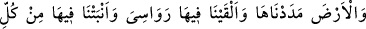
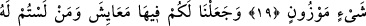
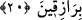

GEÇİM VÂSITALARI
YARATTIK
19. Yeri uzatıp yaydık, orada sâbit dağlar yerleştirdik, yine orada miktarı ve
ölçüsü belirli olan şeyler bitirdik.
20. Orada hem sizin için hem de rızıkları size âid olmayanlar için (gerekli) geçim
vâsıtaları yarattık.
“Yeri uzatıp” üzerinde yerleşilebilecek bir biçimde uzatıp “yaydık.”
Ebû Hüreyre (r.a.)’den rivâyet ediliyor ki: “Kâbe’nin bulunduğu yer, yeryüzünden iki
bin sene önce yaratılmıştır. Yeryüzünün yaratılmasından önce Kâbe su üzerinde bir kaya
kütlesiydi. Üzerinde Allah’ı tesbih eden iki melek bulunuyordu. Allah yeryüzünü
yaratmayı murâd edince yeryüzünü oradan yaydı ve Kâbe’yi yeryüzünün tam ortasında
kıldı.”
Bâzı rivâyetlerde şöyle denilir: Allah Sübhânehû ve Teâlâ, gökleri ve yeri yaratmadan
önce arş, tatlı su üzerindeydi. Arş sarsılınca Allah onun üzerine “Lâ ilâhe illallah”
yazdı ve arş sakinleşti. Allah gökleri ve yeri yaratmak isteyince bu suyun üzerine
rüzgârı gönderdi. Onun etkisiyle su dalgalanmaya başladı ve üzerinde bir duman
belirdi. Allah da gökleri bu dumandan yarattı. Daha sonra Kâbe’nin bulunduğu yerdeki
suyu oradan izâle edince orası kurudu. Rüzgârı suyun üzerine gönderince su dalgalandı
ve ondan bir kaya ortaya çıktı. Bu, Kâbe’nin yerinde kuruyan kubbe gibi bir taştı. Hak
Sübhânehû bu yerden uzunlamasına ve genişlemesine tüm yeryüzünü yaydı. İşte orası,
mâmûr ve meskûn yeryüzünün ortasıdır. Mâmûr olsun olmasın tüm dünyâ küresinin
ortası ise kubbetü’l-arzdır. Orası ise gece ile gündüzün devamlı eşit olduğu, sıcak ve
soğuğun mûtedil olduğu bir yerdir.
Bilesin ki yeryüzünde cennet âlemine ilhâk edilebilecek yerler vardır. Mekke,
Medine, Beyt-i Makdis, Allah’a kulluk edilen yer ve mescidler gibi. Özellikle Nebî
(a.s.)’ın kabriyle minberi arası bir cennet bahçesidir. Oraya giren, hâlis bir inanç ve
sâdık bir niyetle ziyâret eden hem dünyâda hem de âhirette istenmeyen ve korkulan
durumlardan emin olur.
Bu ne yerdir ki yüce arş
Bu yüceliğine rağmen yeryüzüne gıbta ve hased eder
Senin dîdârına mahrem değilim